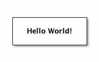
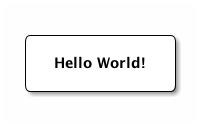

Ditaa Source Code Blocks in Org Mode
Table of Contents
Org Mode support for ditaa

Introduction
Ditaa is a command-line utility that converts diagrams drawn using
ASCII art into bitmap graphics.
Requirements and Setup
Ditaa is distributed with Org mode. The file ditaa.jar can be found
in contrib/scripts.
Activate evaluation of ditaa source code blocks by adding ditaa to
org-babel-load-languages.
(org-babel-do-load-languages 'org-babel-load-languages '((ditaa . t))) ; this line activates ditaa
Org Mode Features for ditaa Source Code Blocks
Header Arguments
- file
ditaasource code blocks require that an output file be specified.- cmdline
- specify command line arguments for
ditaa - java
- arguments for the
javaruntimes (JRE)
Sessions
ditaa does not support sessions.
Result Types
Ditaa source code blocks return a link to a png bitmap file.
Examples of Use
The obligatory Hello World! example in ditaa:
#+BEGIN_SRC ditaa :file images/hello-world.png +--------------+ | | | Hello World! | | | +--------------+ #+END_SRC
+--------------+ | | | Hello World! | | | +--------------+

Now, round all corners by passing ditaa the -r,--round-corners
command line switch.
#+BEGIN_SRC ditaa :file images/hello-world-round.png :cmdline -r +--------------+ | | | Hello World! | | | +--------------+ #+END_SRC
+--------------+ | | | Hello World! | | | +--------------+
